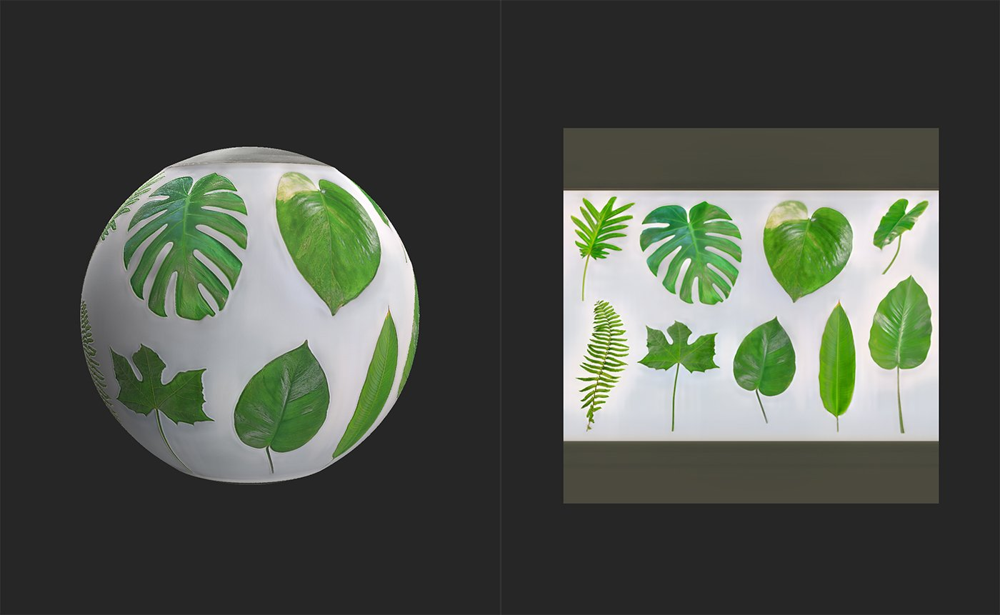

Atlas Creator
In: Tools
Description
The Atlas Creator filter lets you convert materials and images into an atlas. You can then use other filters like Atlas Scatter and Atlas Splitter to use atlas elements within materials.
The images below show an atlas of jungle leaves before and after being processed by the Atlas Creator.

In the image above, an atlas image has been imported and converted into a material, but it's still not an atlas material because the opacity map doesn't account for individual elements.

After running the Atlas Creator an opacity map is generated, and the area between atlas elements is filled in the base color channel.
Parameters
Basic parameters
Remove Small Shapes: 0-1
Use this to adjust the minimum size of objects within the atlas. This is useful for removing artifacts.
Opacity - Chrominance Influence: 0-2
Fine tune the edges of atlas elements based on color values.
Add Opacity: image/brush
Import a file to use as a mask or use the brush to paint areas that should be opaque directly in the 2D view.
Usage Guide
Prepare an atlas image
Before using the Atlas Creator filter, it's a good idea to ensure that your atlas image is prepared correctly.
The Atlas Creator works based on the color of the image, and doesn't consider transparency. This means that the best way to prepare your atlas image is to ensure that the space between elements is a consistent black or white, this makes it easier for the Atlas Creator to generate the opacity mask.
Generate an atlas material from an image
The Atlas Creator is designed to convert an atlas image into a material atlas.
- Import your source image to the layer stack.
- If prompted to select a material creation template, select Image to Material. Otherwise, with the image in the layer stack, add an Image to Material (AI powered) filter above your image.
- Wait for the Image to Material filter to convert your source image into a material. Adjust parameters until you're happy with the result.
- Add the Atlas Creator filter to the top of the layer stack.
- Adjust the parameters of the Atlas Creator until you're happy with the results.
- Add the image to the layer stack. If prompted to select a material creation template, select Use as Bitmap.
- With the image layer selected, in the Properties panel change the Output Usage to Base Color.
- Add the Atlas Creator to the top of the layer stack.
- Adjust the parameters of the Atlas Creator until you're happy with the results - view the opacity channel in the 2D view to see the filter results more clearly.
- Use the Export panel to export the generated channels.